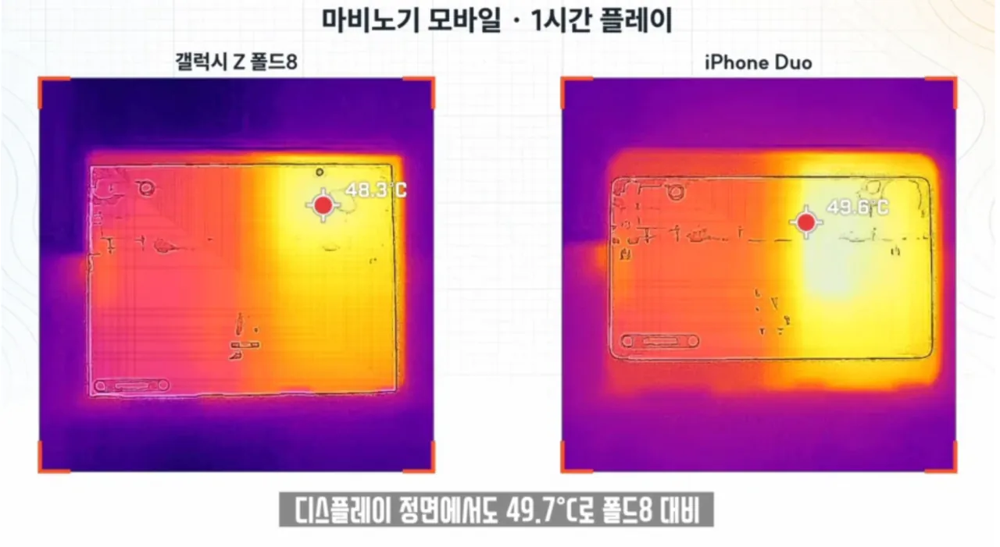

최적화 개좆박아서 발열테스트용으로씀

최적화 개좆박아서 발열테스트용으로씀
명조나 그런걸로 했었는데 자리 내줬네 ㄷㄷ
대충 서브컬쳐게임이
호요버스의 원신, 붕스, 찢: CPU 위주로 갈구는 게임, iOS Metal 우선 최적화 (웬만한 폰들은 다 잘 돌림. A칩 >= 스냅 > 디멘시티 >>>> 엑시노스)
명조: 특이케이스 1, CPU GPU를 동시에 극한으로 갈구는 게임 (스냅 > 디멘시티 > 엑시노스 >>> A칩)
마비노기 모바일: 특이케이스 2. CPU 위주로 갈구는 게임인데 최적화가 애미뒤져서 메모리 누수가 미친듯이 심각하게 발생하면서 최적화가 개 좆박음 (뭔 AP를 쓰던지간에 답이 없음)
찢...?
젠존제가 zzz가 약자라서 찢이라고 불림
메모리 누수가 너무심함
얘네 진짜 개적화 ㅈ되긴함 그래픽이 좋은것도 아닌데 웬만한 오픈월드보다 발열 심하고 프레임드랍 ㅈ됨ㅋㅋ
맞긴 해 PC판도 좀 돌리다보면 메모리 누수 개오져서 혼자서 AAA 패키지 게임급으로 시스템 자원 빨아먹음
마비노기 모바일(아님)
ㅋㅋㅋ이게맞다 ㅋㅋㅋㅋㅋㅋ 이새끼들 모바일bm으로 돈빨생각밖에 없어서 모바일'도' 가능하게끔 채택한거 그이상그이하도 아님
진짜 그 그래픽으로 최적화가..
원래 원신, 명조가 폰겜 벤치마크 테스트용이였는데 자리를 내준 이유가 ㅅㅂㅋㅋㅋㅋㅋㅋ
ㅋㅋㅋㅋㅋ ㅅㅂ
모바일 3d markㄷㄷㄷ
파스 모바일 ㅋㅋ
그래도 이환 같은 겜 풀옵이 더 갈구지 않나?
발적화는 못 이기나
내가 저런건 잘 몰라서 그런데 저정도 차이가 큰거야?
애초에 마비m은 폰으로 느려서 제대로 못돌림. 처음부터 모바일 탈을 쓰고 나온 pc게임임
요즘 폰겜들은 그런 놈들이 꽤 있더라 ㅋㅋ 그냥 폰겜인척하는 pc게임들
모바일도 슬슬 이터니티 해야..
마비노기 모바일 유니티로 만들었는데 어떻게 메모리 누가 생기지...?
설마 지형 이동할 때 데이터 캐싱 - 릴리즈 안 하나 ㅋㅋㅋ
같은 자리에서 낚시만 하루 종일 켜 둬도 생기는 걸로 봐선 다른 문제인 듯
PC게임인 이스케이프 프롬 타르코프도 유니티로 만들었는데 최적화 지랄남 ㅋㅋㅋ
그냥 숙련도 이슈인걸로...
64긱 5080조합으로도 렉걸리는 신기한게임
심지어 인터넷 5기가라인에 ap에서 다이렉트로 땡겨놨는데 통신이 불안정하다 라고 띄우는 아몰랑게임 ㅋ
날 추워지는데 다들 모비해라.
마비노기 보조배터리로 충전하면서 게임하는데도
배터리가 달더라
업계 사람인데 발열 문제는 유니티 엔진으로 개발한게 많이 큼 좀 심함 C#과 C++ 의 차이가 있어서 유니티 엔진은 발열 못잡음
가뜩이나 딸리는 개발력이 8년동안 코드개씹정크 스파게티되고 함수 변수 다 뭔지도 모를 상황이라 손고치겠답시고 손가락 건드리면 왠지모를 무릎뼈가 나가버리는 누더기 골렘 상탠데 최적화가 좋으면 이상하지
유저도 최적화 중임
3d마크 온라인
모바일로 할 수 없는 모바일겜
와 50도에 육박하네
마비노기M은 출시당시에 최신폰들도 최고화질로 못돌리는 게임..
배터리 / 발열 제어랍시고 넣어놓은 기능들이 있긴하던데
제대로 작동하는지는 몰?루
방열판 있는 듀오가 왜 온도가 더 높지,
갤폴드는 알아서 스로틀링 거는 갑네
원신 명조로는 부족하다